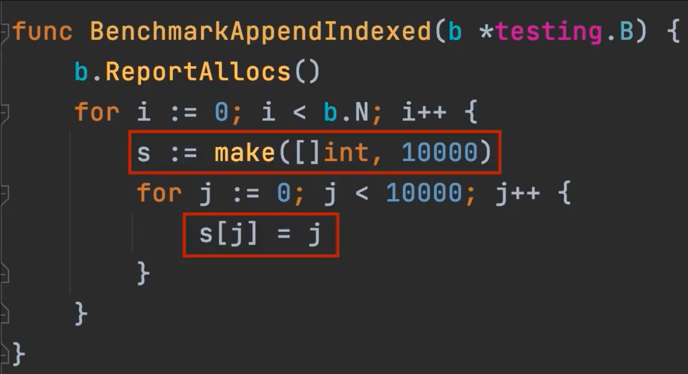

Slice 扩容机制
Slice的长度和容量是多少？
问题
var s[]int - > 0，0
s = append(s ,0) -> 1, 1
s = append(s ,1)-> 2, 2
s = append(s ,2)-> 3, 4
for i := 3; i < 1025 ; i++{
s = append(s, i)
}
//len : 3+1022 = 1025
//cap :1028
growslice

当cap<1024的时候，每次都是乘以2，当cap>1024的时候，每次乘以1.25。
s = append(s,0,1,2,3) -> 3,3 在这种append下，go做了内存优化。
append slice 的三种方法的对比



性能对比：3>2>1
预先分配内存可以提高性能
slice 扩容的逻辑
Go 中切片扩容的策略是这样的：
- 首先判断，如果新申请容量大于 2 倍的旧容量，最终容量就是新申请的容量
- 否则判断，如果旧切片的长度小于 1024，则最终容量就是旧容量的两倍
- 否则判断，如果旧切片长度大于等于 1024，则最终容量从旧容量开始循环增加原来的 1/4, 直到最终容量大于等于新申请的容量
- 如果最终容量计算值溢出，则最终容量就是新申请容量
func main(){
var s []int
for i := 0; i<3; i++{
s = append(s,i)
}
moditySlice(s)
fmt.Println(s)
}
func moditySlice(s []int){
s[0] = 1024
}
//结果是1024 1 2
func main(){
var s []int
for i := 0; i<3; i++{
s = append(s,i)
}
moditySlice(s)
fmt.Println(s)
}
func moditySlice(s []int){
s = append(s,1024)
s[0] = 1024
}
//结果是 1024 1 2
//原因是 s 在追加的时候没有发生扩容，所以 s[0] 进行修改的时候，修改的仍然是之前的 s.
func main(){
var s []int
for i := 0; i<3; i++{
s = append(s,i)
} //cap = 4
moditySlice(s)
fmt.Println(s)
}
func moditySlice(s []int){
s = append(s,2048)
s = append(s,4096) //这时候发生了扩容，这里面的s就和外面的s不一样了,存储空间发生了改变
s[0] = 1024
}
// 结果是 0 1 2
func main(){
var s []int
for i := 0; i<3; i++{
s = append(s,i)
} //cap = 4
moditySlice(s)
fmt.Println(s)
}
func moditySlice(s []int){
s[0] = 1024
s = append(s,2048)
s = append(s,4096)
}
// 结果是1024 1 2
总结： 没有发生扩容，那么修改就在原来的内存中，如果发生了扩容，就修改在新的内存中。
func main(){
var s[]int
b,_ := json.Marshal(s)
fmt.Println(string(b))
}
//输出nil
func main(){
s := []int{}
b,_ := json.Marshal(s)
fmt.Println(string(b))
}
//输出 【】
总结：
使用**[]Type{}**和**make[Type]**初始化的时候**slice**不为**nil**。
使用**var x[]Type**后，**slice**为**nil**。
Bounds Check Elimination 编译优化技巧

先访问一下s[3]元素，编译器就确定了，一定存在3号元素，就避免编译器重复检查了。
如果能确定访问到的slice长度，可以先执行一次让编译器去做优化。
更新: 2022-09-13 15:26:26
原文: https://www.yuque.com/xiaoshan_wgo/codingnotes/gguirt